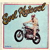

1
Underground Propaganda
http://www.metrix.net/daddict/
Underground Propaganda, described as "truth told in the guise of deception," is a conscious effort by Dead Addict, an interesting and subversive netizen, to question authority and the filter of the media. The centerpiece of the site is Dead Addict's essay "In Defense of Piracy," which is a strikingly fresh presentation on the act of "stealing" software. For instance, the site proposes giving expensive graphics programs to artists in order to elicit and facilitate projects that might not otherwise be possible. Also featured are a potluck of essays on such topics as Internet access for the homeless and the one-on-one social effects of randomly giving money away. A dark and fascinating dig through the underground.
The NAMES Project -- The AIDS Memorial Quilt Web site
http://www.aidsquilt.org/
"The Quilt is a patchwork of lives, made up of 3' by 6' panels, each remembering a person lost to AIDS." You may not get a chance to visit the AIDS quilt as it makes its journey around the United States this year, but a trip to the official site is both heartwarming and heartbreaking. There are currently over 32,000 homemade panels in the quilt, each the approximate size of a human grave, and each commemorating the death of an AIDS victim. The mission of the quilt is both cathartic and educational; at this excellent site you can learn how to make a panel, sign the guestbook, look at educational links, peruse the quilt's touring schedule and learn how to participate in the display in Washington, D.C. on Oct. 11-13. "The Quilt makes you think -- it's a tool for learning about AIDS. The Quilt is the icon of the epidemic -- it turns despair into action in communities all over the world."
Dr. Toy's Guide on the Internet
http://www.drtoy.com/
Dr. Stevanne Auerbach, the Director of the Institute for Childhood Resources, is also known as Dr. Toy, the creator of the "100 best children's products awards" and the driving force behind this Web site. Dr. Toy's list of the best toys is complete with photos, prices and telephone numbers to order the toys shown, which range from Coochy Coo Baby to the Nerf Backwards Basketball. This site, however, is not all fun and games. Dr. Toy's Guide also contains practical articles about toys and safety, numerous links to children's resources on the Web and several in-depth toy industry features.
OperaGlass
http://rick.stanford.edu/opera/main.html
Cartoon Network addicts in the IU offices are convinced that the The Marriage of Figaro was a little number performed by Bugs Bunny, so we sent them to this culture-rearing site. OperaGlass is a complete opera and classical music resource with information about composers, librettists, performances, opera companies and more. The site is mostly textual with links to performers' home pages and a wide array of music links, opera houses and performance schedules. The highlight of this site is the extensive list of operas, replete with synopses, discographies, librettos, and occasionally, images. If you can't fathom becoming an opera aficionado, browse the operatic survey and pick up some handy statistical lingo so at least you can assume an air of gentility.
Invention Dimension
http://web.mit.edu/~invent/
MIT is a hotbed of inventin' fools, and this, their showcase of inventors past and present, parades their impressive heritage. Ranging from "historical figures such as Benjamin Franklin, the inventor of the lightning rod and Franklin stove, to living legends such as Steve Jobs and Steve Wozniak, the brains behind the original Apple computer," this site features a new biographical sketch each week. Always fresh and interesting, the site provides a good mix of big names and lesser-known mothers of invention, particularly many oft overlooked female architects of creation. Invention Dimension encourages people to invent on their own with links to resources, grants, labs and contests -- the site hits that perfect balance between amusement and education.
The Skeleton Closet
http://www.realchange.org/
Subtitled "All the Dirt on All the Candidates -- Because character DOES matter." You may or may not believe all the dirt here, but we're willing to bet that either way, you'll find The Skeleton Closet a very amusing (albeit potentially libelous) read. Real People For Real Change, the keeper of the site, is "an independent, non-connected political action committee certified by the Federal Election Commission since 1992." Their creed: "We do not support any candidate or party, and aim to attack all presidential candidates with brutal fairness." Specifically, they're a bunch of Oregonians "who were fed up with politics -- and especially media coverage of politics -- and decided to do something besides bitch and drink, like everybody else does." So what they've done is seriously dish out the "facts" on candidates' shady investments, bimbo flings, drug use and issue-waffling for your edification. Take it all with a grain of salt, but definitely take it.
Frank's Vinyl Museum
http://www.searchlight.com/frank/vinyl/index.htm
 Oh, what do you play first? The "polka disco" version of "Roll Out the Barrel" or a bad cover of a Beatles tune or perhaps a spoken-word recitation by daredevil Evil Knievel? Frank LaRosa offers up his dubious "collection" of albums that he has amassed from the bins of thrift stores, garage sales and the like, and makes them available to Web users everywhere. Most of the museum's sound files are so inherently bad that they're unintentionally hysterical, but then his well-written commentary cements the experience. But it also made us wonder what the heck was going on in the heads of these record company execs while they were coming up with such pathetically loathsome concepts as psychedelic organ music, and how it came to be that they managed to convince marketers to actually sell the idea? (For Frank's guide to the "Super Sounds of the Internet," turn to p. 42.)
Museum of Advertising Icons
http://www.toymuseum.com/
A pop culture lover's fantasy, Creatabili-TOYS' museum is a virtual version of an actual Florida museum housing over 650 "exhibits," with displays of Big Boy, Cap'n Crunch and Colonel Sanders to Messrs. Bubble, Clean and Peanut. Visitors are invited to leisurely browse the halls of the museum or "follow their noses" and search by keywords. Click on any of the toys and you're treated to an entertaining history of that character. To paraphrase the words of one of the museum's occupants, "this site is grrrreat!"
Fringeware
http://www.fringeware.com/
We've long been fans of Fringeware, often referred to as a zine, but best described as a state of mind. The offerings here include music, reviews and attitude all wrapped up in the skin of a catalog (with really cool clothes that slackers everywhere will appreciate). Be warned: They do charge you to read the stuff in their current issue (sometimes just 50 cents). But it may be worth it to avoid slogging through dreck and staring at ad banners.
Panic Encyclopedia
http://www.freedonia.com/panic/
Billed as "The Definitive Guide to the Post-modern Scene," the Panic Encyclopedia acts as more than a collection of definitions. Rather, it attempts to collectively explain what's going on in the world (and what's amiss with it) through a series of exhaustive essays which are assorted by topic, then alphabetically archived. Among the essays, you'll find the reason why children raised with television differ from those of other generations and the impact of Elvis Presley on the American cynicism. Some of the topics seem random ("Panic Florida Sunstrokes"), but all are interesting.